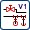

在 NX 中有三个核心的管线布置应用模块：
机械管线布置
提供工具以用于定义由流体以及机械组件构成的系统。
电气管线布置
提供工具以用于定义由电源、信号以及电气组件构成的系统。
 逻辑管线布置
提供工具以为机械管线设计创建关联的流程图和原理图。
在机械管线布置下还有其它三个子类：
管道和布管
提供工具以定义管道和布管装配。
HVAC
提供工具以定义 HVAC (Heating、Ventilation and Air Conditioning，供热通风与空气调节)系统。
平台
提供工具以定义平台装配。
对于这个课程，您将主要使用机械管线布置应用模块以及它的各个子类。
译者注：在管线布置应用模块中，分为三个最大的应用模块，分别为机械管线布置、电气管线布置以及逻辑管线布置，其它的管线布置应用模块，比如管道和布管、HAVC，都是可以和这三个应用模块共存的，效果就是会多出一些命令，类似建模与装配、PMI之间的关系。
|
工具条 |
|